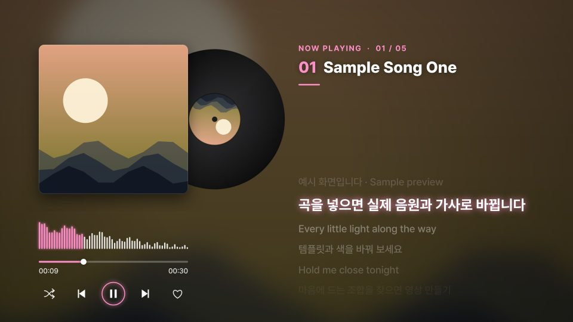
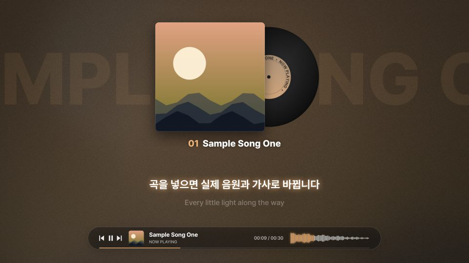
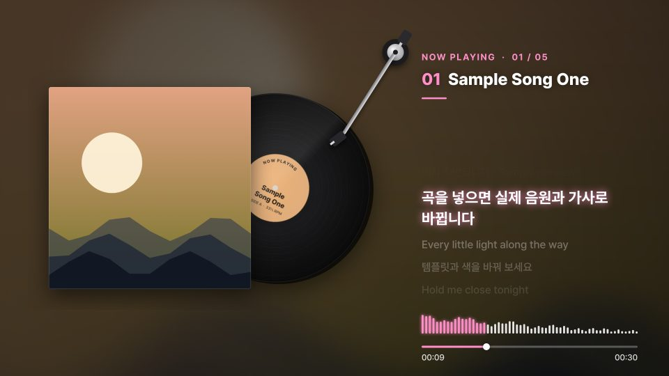
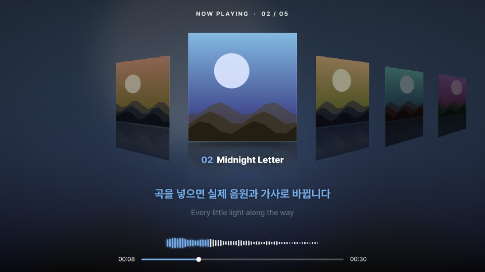

음원 · 커버 · 가사(SRT/LRC)를 넣으면 한 곡 또는 플레이리스트 리릭비디오(MP4)를 만듭니다. 원하는 템플릿을 골라 시작하세요.

바이닐 · 센터 무대 · 시네마 · 폴라로이드 · 턴테이블, 5가지 배치 중에서 고르는 기본 템플릿입니다.
이 템플릿으로 만들기 →
커버에서 뽑은 색으로 배경과 LP 라벨이 곡마다 바뀝니다. 곡이 바뀔 때 색이 부드럽게 넘어가고, 곡 제목이 배경에 크게 흐릅니다.
이 템플릿으로 만들기 →
곡마다 앨범에서 LP가 미끄러져 나오고 바늘이 내려앉습니다. 곡이 끝나면 LP가 들어가고 앨범이 뒤집히며 다음 곡으로 넘어갑니다.
이 템플릿으로 만들기 →
플레이리스트의 커버들이 원근감 있게 늘어서고, 곡이 바뀔 때마다 한 칸씩 미끄러져 다음 곡이 가운데로 옵니다. 여러 곡 플레이리스트에 잘 어울립니다.
이 템플릿으로 만들기 →⚠ 폴더 안의 파일(lib · templates · previews)을 함께 두어야 작동합니다. 인터넷 연결 없이도 작동합니다. 음원 · 이미지 · 가사의 저작권은 사용자에게 있어야 하며, 유튜브 업로드 시 AI 음악은 ‘변경되거나 합성된 콘텐츠’ 항목에 공개해 주세요. 포함된 글꼴 · 라이브러리의 라이선스는 lib/LICENSES.txt에 있습니다.